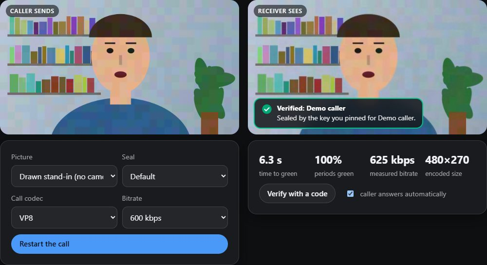
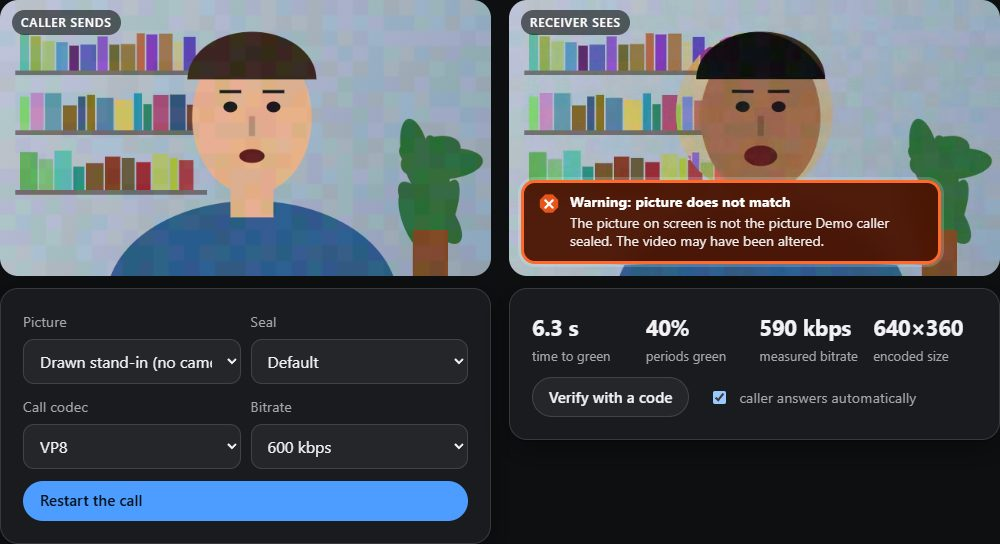

Check who is really on the video call.
A real-time face swap can now pass as your bank or your mother. LiveSeal does not try to spot the fake. It lets the real person's device prove itself, with a seal hidden in the picture that a clone cannot make.
Research preview. It has been measured in a simulator with real video codecs and in a browser loop-back call. It has not been tested on a real call between two devices, and on flat backgrounds the seal can be seen. It proves which device sent the picture, not who is sitting in front of it, and it does not cover the sound. The limits in full.
Three answers, always in words as well as colour
Verified: Mum
The picture carries a fresh seal from the key you paired with her, and it is the picture her device sealed.
Not verified
No seal, or one that cannot be read. On its own this means nothing. If Mum normally seals her calls, you are told so, plainly.
Warning
A seal is there and fails a check: wrong signature, an old recording, another call, or a picture that is not the one that was sealed.
Watch a face swap get flagged


These are screenshots of the lab, which runs the same thing live in your browser with a drawn stand-in or your own camera.
How it works
The caller's device signs
Every two seconds it signs a short statement: this key, now, for this call, and a fingerprint of the pictures it just sent.
The statement rides in the picture
Tiny brightness and colour shifts in large blocks carry it through the call app's video compression. It works with any app that shows video.
Your device checks
It reads the statement out of the pixels, checks the signature against a key you already trust, and compares the pictures it got with the ones that were signed.
A clone has no key, so it cannot sign. A recording is too old. And a genuine seal copied onto other pictures no longer matches them.
What LiveSeal can and cannot prove
It can show
- that the picture was sealed by a device holding a key you paired with, or a key an organisation publishes on its own web address;
- that the seal was made in the last few seconds, and for this call if you ask for a code;
- that the person in the picture has not been swapped for someone else since it was sealed.
It cannot show
- that an unsealed call is fake. No seal means "unknown", nothing more.
- anything about the sound. A real sealed picture with a cloned voice over it stays green.
- small edits. Changing only the mouth of a genuine sealed stream was not caught in testing.
- who is holding the device. A stolen unlocked phone seals just as well until its key is revoked.
- anything when the caller's own device is compromised, or when a real person chooses to lie.
Where it stands
| Question | Answer today |
|---|---|
| Does the seal survive call compression? | simulator Yes at 600 kbps and above for VP8, VP9, H.264 and AV1 at 640x360. Not for VP8 at 300 kbps, and not at 720p below 1 Mbps. |
| Is a swapped face caught? | simulator browser loop-back Yes for a replaced face or person, with simple stand-ins for a face swap. A real face-swap model was not tested. |
| Does it work on a real call? | not tested No call between two devices has been made yet. |
| Can people see the seal? | yes, on flat backgrounds Look closely at the wall in the screenshots above: the faint mosaic of coloured blocks is the seal. A real camera picture hides it better; how much has not been measured. There is a blind test page. |
| Does it work from a hand-held phone? | mostly not A moving camera defeats this version. |
Every number behind this table is in the evaluation document in the repository.
Use it
Seal your camera
For calls in the browser, the extension. For Zoom, Teams or WhatsApp on the desktop, the camera page plus a virtual camera.
Open the camera pageCheck a call
The extension badges each person's picture. For any other app, point a phone at the screen or capture the window.
Verify a screenCheck a recording
Drop in a recorded call and get a report for every two seconds of it.
Check a recordingFor organisations
Publish your keys on your own web address so customers can check that a call is really from you.
See the demo bank